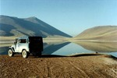
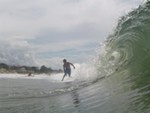
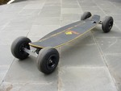
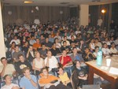
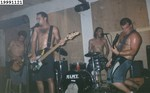
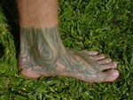

|  | |
| Ser tosco é... | Viagens |
| Aurelio Freak Show | Lugares que já visitei |
|  |  |
| Surf | Carveboard |
| Fotos aquáticas | Em ação com o carrinho |
|  |  |
| Cursos e palestras | Banda |
| Viagens por aí para tagarelar | Tocando bateria com as bandas |
|  | |
| Meu pé | |
| Meu pé tatuado |